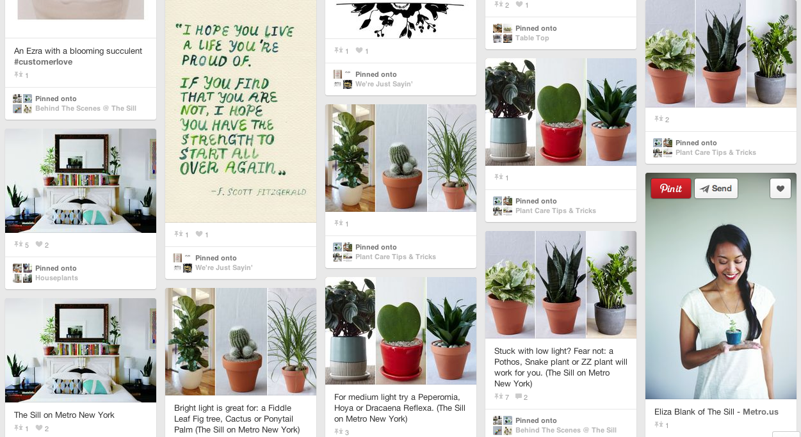
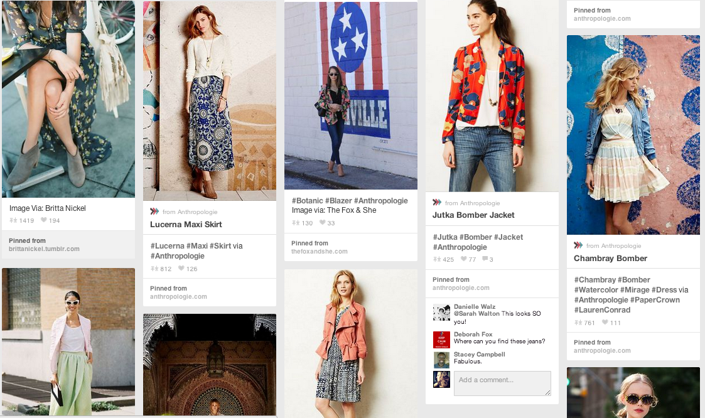

Visual Social Media
@leahbannon
This presentation on GitHubWhen should you use visual media?
A lot
How many people do you want to pay attention?
Ex: Department of Interior
The Department of Interior manages a wide variety of public parks, properties, and monuments, including the Charles Young Buffalo Soldiers National Monument in Ohio, the San Juan Islands National Monument in Washington, the First State National Monument in Delaware, the Rio Grande del Norte National Monument in New Mexico, and the Harriet Tubman Underground Railroad National Monument in Maryland. You can learn more at our website, www.doi.gov.
Let's try that again
People just prefer visual
Don't just take my word for it.
The Sill
An example.
The Sill
The Sill
The Sill
The Sill

The Sill on Pinterest

Think of the user!
- Think through the use case.
- Would you read that?
This isn't rocket science
Complicated or boring --> Fun and interest = HARD WORK
Anthropologie
Lululemon

Don't be self obsessed
Nobody likes someone who won't stop talking about themself.